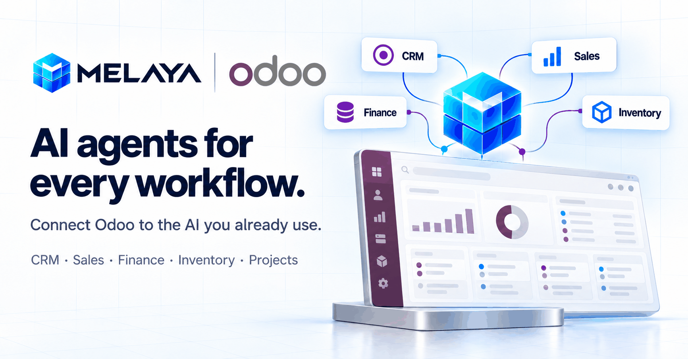
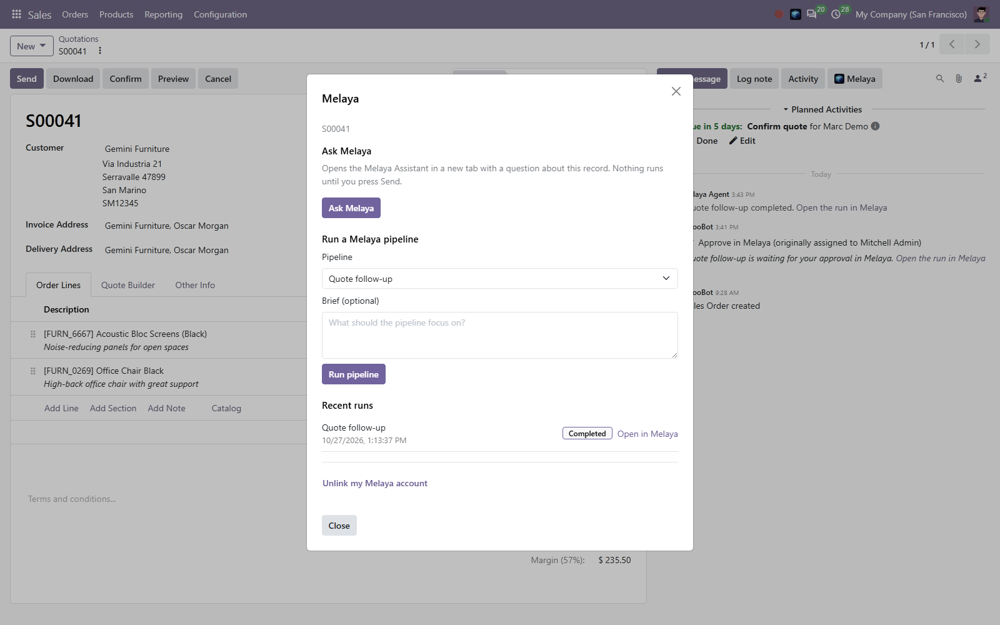
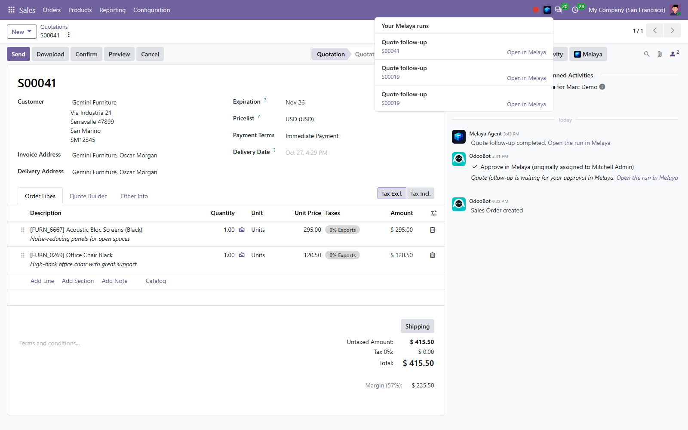
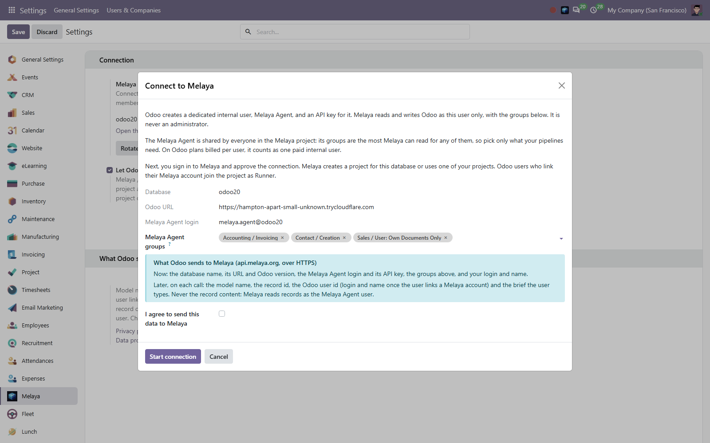
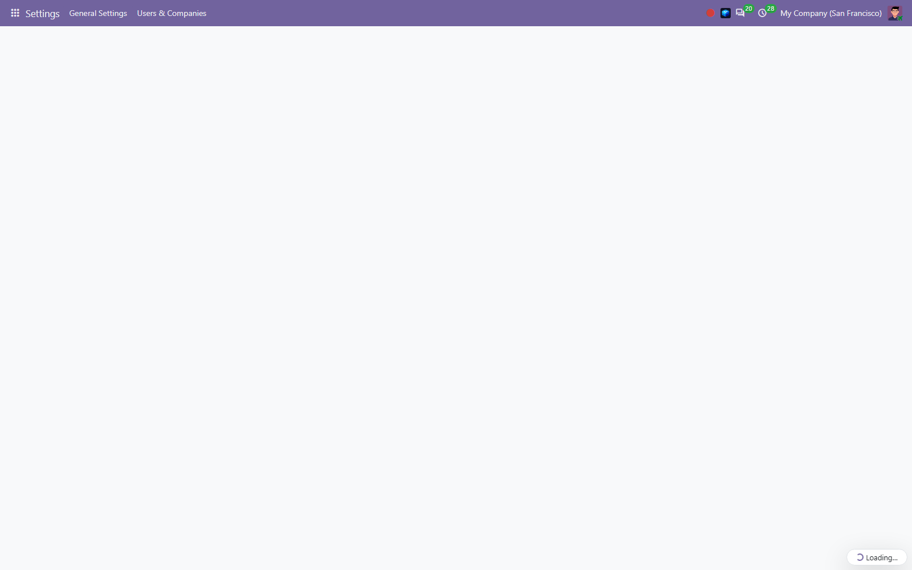

<section class="oe_container">
    <div class="container mx-auto px-3 py-4">
        <div class="text-center mb-4">
            
        </div>
        <div class="text-center mb-5">
            <h2 class="mt-3">Melaya AI Agents for Odoo</h2>
            <p class="lead" style="color: #475569;">Ask an AI agent about any record. Run your team's agent pipelines on it. Follow the result without leaving Odoo.</p>
        </div>

        <div class="text-center mb-5">
            
        </div>

        <h3>What you get</h3>
        <ul class="lh-lg">
            <li><b>A Melaya button in the chatter</b> of the records you choose, next to Send message, Log note and Activity. <b>Actions &gt; Melaya</b> works too.</li>
            <li><b>Ask Melaya</b> on a quote, an invoice, a contact or any record you choose. The Melaya Assistant opens with the question ready. Nothing runs until you press Send.</li>
            <li><b>Run a Melaya pipeline</b> on the record with a short brief: follow-ups, summaries, research, data clean-up, whatever your team built in Melaya.</li>
            <li><b>Follow every run</b> from the record: queued, running, approval needed, completed or failed, with a link to the full run in Melaya. The Melaya menu in Odoo's top bar lists your recent runs and how many wait for your approval.</li>
            <li><b>Reminders and results on the record.</b> When a run waits for your approval, Odoo adds an "Approve in Melaya" To-Do for you on the record. When the run is over, Odoo logs an internal note with the result and a link to the run. Customers never see these notes.</li>
            <li><b>Approve before it writes.</b> Changes to Odoo always go through an approval in Melaya that names the operation, the records and the person who asked.</li>
            <li><b>Bring Odoo together with the rest of your stack</b>: email, chat, documents and the other services connected to your Melaya project.</li>
            <li><b>Pick your AI.</b> Use the team's own provider key, or start with the free Melaya AI model.</li>
            <li><b>One workspace per database.</b> Colleagues who link their Melaya account join the same project as Runner. The project owner manages roles and seats in Melaya.</li>
            <li><b>Choose who uses it.</b> For each kind of record, pick the pipelines it can run and, if you want, the Odoo groups that can use Melaya on it.</li>
        </ul>
        <div class="text-center my-4">
            
        </div>

        <h3>Set it up in five minutes</h3>
        <ol class="lh-lg">
            <li>Install the module, then open <b>Settings &gt; Melaya</b>.</li>
            <li>Pick the groups of the <b>Melaya Agent</b> user (for example Sales and Invoicing). Administrator groups are never allowed.</li>
            <li>Click <b>Connect to Melaya</b>, review what Odoo sends, sign in to Melaya (or create a free account), check the confirmation code and approve the connection.</li>
            <li>In <b>Melaya &gt; Exposed models</b>, choose where the Melaya action appears and which pipelines each model can run, then click <b>Save to Melaya</b>.</li>
            <li>Add your colleagues to the <b>Melaya / User</b> group. On a record, they click <b>Melaya</b> in the chatter (or <b>Actions &gt; Melaya</b>) and link their Melaya account once.</li>
        </ol>
        <p style="color: #475569;">The connection creates one internal Odoo user, Melaya Agent, with an API key. On Odoo plans billed per user, the Melaya Agent counts as one paid internal user.</p>
        <div class="text-center my-4">
            
        </div>
        <div class="text-center my-4">
            
        </div>

        <h3>What Melaya can read</h3>
        <p class="lh-lg">Melaya reads Odoo as the Melaya Agent user, for everyone in the project. The Agent's groups set the upper limit of what Melaya can read, so give it only the groups your team's pipelines need. Before Ask Melaya opens, Odoo checks that the clicking user may read that record, and Ask Melaya then works on that record's own fields only: it does not follow related records or the chatter. Pipelines run with the project's Odoo connection, so build and share them with the Agent's reach in mind.</p>

        <h3>What Odoo sends to Melaya</h3>
        <p class="lh-lg">Calls go to <b>api.melaya.org</b> over HTTPS and are signed with a token only Odoo administrators can read. When an administrator connects: the database name, URL and Odoo version, the Melaya Agent login and API key, its groups, and the administrator's login and name. On each call: the model name, the record id, the Odoo user id (login and name once the user links a Melaya account) and the brief the user typed. To follow the runs started from Odoo, Odoo sends their run ids; the reminders and result notes are written by Odoo on its own records. The module never sends record content: Melaya reads records through the Melaya Agent user, with the rights you gave it. Disconnecting or uninstalling the module revokes the token, deletes the Melaya Agent API key and archives the Melaya Agent user. Duplicated and neutralized databases never use the original's connection.</p>
        <p>Privacy policy: melaya.org/privacy. Data processing agreement: melaya.org/dpa.</p>

        <h3>Plans</h3>
        <p class="lh-lg">The module is free. A free Melaya account is required. Pipelines, schedules, triggers and team seats depend on the Melaya plan.</p>

        <h3>Requirements</h3>
        <ul class="lh-lg">
            <li>Odoo 20, on Odoo.sh or self-hosted, reachable at a public https address.</li>
            <li>Odoo's JSON-2 external API, used with the Melaya Agent's API key. Your Odoo plan must include external API access.</li>
            <li>The Odoo server must be able to reach https://api.melaya.org.</li>
        </ul>

        <h3>Support</h3>
        <p>Questions or problems: <a href="mailto:info@melaya.org">info@melaya.org</a>. Administrators find connection details in <b>Melaya &gt; Diagnostics</b>.</p>
    </div>
</section>
